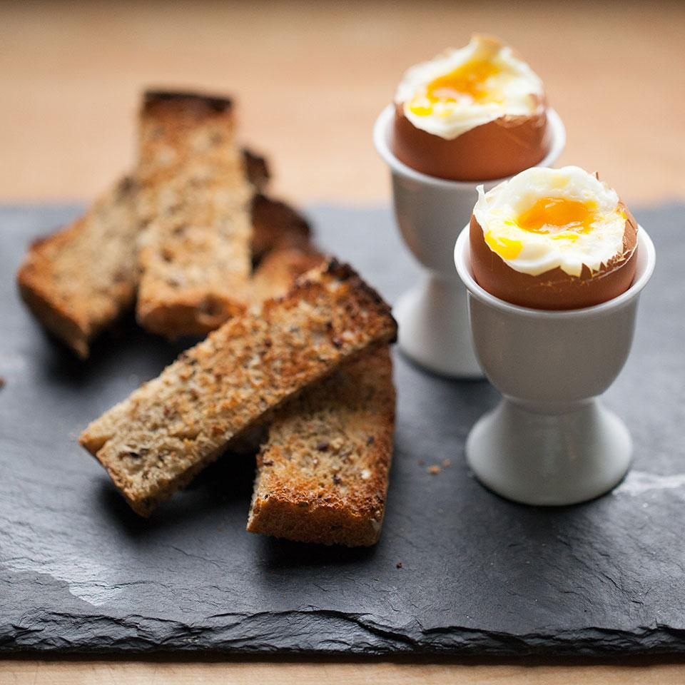

Soft-Boiled Eggs & Soldiers

For when you want a fancier breakfast~
Soft-boiled eggs with toast soldiers are a classic English breakfast. Simply cut toast into strips and serve with dippy eggs for a fun, kid-friendly breakfast recipe.
Ingredients List
- 2 large eggs
- 2 pieces of whole-wheat bread, toasted
- Salt
- Ground Pepper
Step-By-Step Guide
- Place eggs in a small saucepan and cover with water. Bring to a simmer over medium-high heat. Remove from heat and let stand for 2 to 3 minutes for soft-set yolks.
- Cut toast into strips
- Transfer the eggs to egg cups or a bowl. Tap the top of each egg with a spoon to crack the upper part of the shell and remove. Season with salt and pepper. Serve with the toast "soldiers."
Back to Top
Back to Main Menu